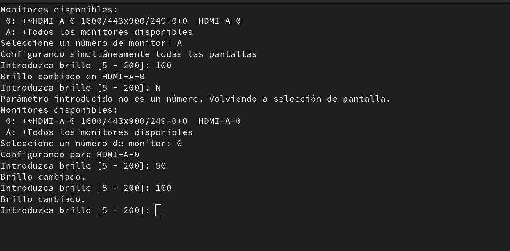
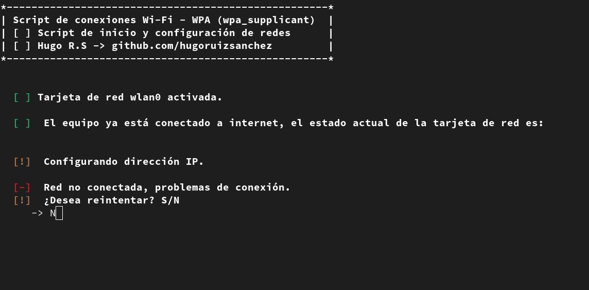

Proyectos en GNU/Linux
Algunos programas realizados en bash
Script para XRandR que posibilita la reducción del brillo de los monitores desde una interfaz de software
Introducción y funcionamiento
En vista de que no podía configurar manualmente el brillo de mis monitores, desarrollé una utilidad para los sistemas operativos GNU/Linux dedicada a los entornos de escritorio que usan el protocolo XRandR (la gran mayoría en el ecosistema Linux).
- Muestra en pantalla todos los monitores disponibles, en forma de lista numerada.
- Permite elegir un monitor determinado o todos los monitores a la vez.
- Ofrece la posibilidad de subir o bajar el brillo introduciendo porcentajes: 5% para el mínimobrillo, 100% para el máximo brillo, o +100% para dar mucha más claridad a la pantalla.
- Está limitado para evitar subir o bajar el brillo en rangos inconvenientes (>5% o <200%)
Demostración en vídeo
Repositorio y descarga
Puedes ver y descargar el repositorio en esta página de GitHub.
Script para wireless-tools que facilita la conexión a redes wifi WPA desde la terminal
Para equipos que no hacen uso de entornos de escritorio que faciliten la tarea de mantener una conexión wifi con cifrado WPA, desarrollé un script en bash que emplea las utilidades wireless-tools (ifconfig, iwlist, iwconfig, dhclient, wpa_supplicant) y recibe dos parámetros de entrada: nombre de la red y contraseña, que posteriormente archiva en un fichero de configuración y utiliza - hasta ser modificado - para establecer la conexión cada vez que se llama.
Repositorio y descarga
Puedes ver y descargar el repositorio en esta página de GitHub.